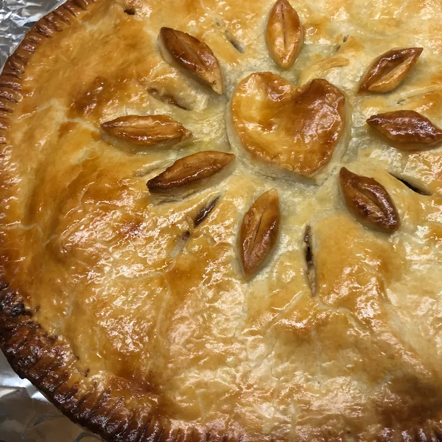

Apple Pie

Description
Apple Pie is probably one of the most famous pie fillings out there, and this recipe will bring to life the best apple pie you could ever make.
With only 5 steps you can make the most delicious apple pie.
Ingredients
- ¾ cup white sugar
- 2 tablespoons all-purpose flour
- ½ teaspoon ground cinnamon
- ¼ teaspoon ground nutmeg
- ½ teaspoon lemon zest
- 7 cups thinly sliced apples
- 2 teaspoons lemon juice
- 1 tablespoon butter
- 1 recipe pastry for a 9 inch double crust pie
- 4 tablespoons milk (Optional)
Steps
- Preheat oven to 425 degrees F (220 degrees C).
- Mix together the sugar, flour, cinnamon, nutmeg and lemon peel.
- Line one crust in a 9-inch deep-dish pie pan. Layer 1/3 of apples into pie crust. Sprinkle with sugar mixture and repeat until done. Sprinkle with lemon juice and dot with butter.
- Place second pie crust on top of filling and flute the edges. Cut vents in top crust and brush with milk for a glazed appearance if desired.
- Bake at 425 degrees F (220 degrees C) for 40 to 50 minutes.